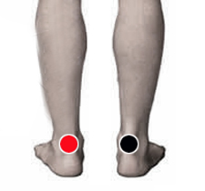

Shigella
Par
aquiles - aquiles
aquiles - tobillo
aquiles superior - aquiles sup.

Generalidades:
Dolor de cabeza (cefalea intensa) con fiebre, nausea, vómitos, malestar de estado general. Trastornos digestivos, diarrea sanguinolenta, distención abdominal del ombligo para abajo. En niños se pueden presentar convulsiones.